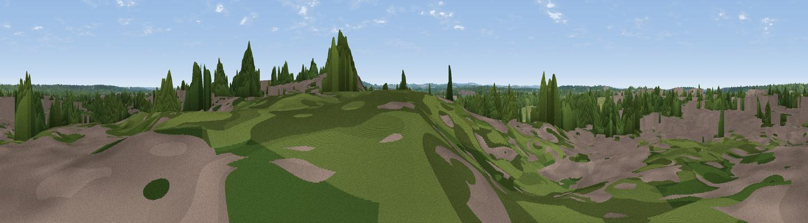

The Mounts
#44354 in England · top 68% of its area beats it · near FleetWhere it is
The exact computed spot (SU 79308 55341). Click the marker for map links.
The view, rendered

A 360° render of this exact spot computed from the terrain model, tree cover and land cover — summer colours, afternoon light, calibrated against photographs of famous viewpoints. Real trees, hedges and buildings will differ in detail.
The panorama
Grey silhouette: terrain skyline in each direction (720 bearings, Earth curvature and refraction included). Dashed green: skyline with trees (+15 m) and buildings (+8 m) as obstacles. Blue strip: how far the ground is visible on each bearing.
Where the view opens
Wedge length = distance to the farthest visible ground on that bearing (vegetation-aware). Rings at 10, 25 and 50 km.
What fills the view
41% woodland · 25% grassland · 24% built-up · 10% cropland
Angular shares of the visible panorama (visual magnitude), not map area. Landscape diversity 0.56 (0–1 Shannon).
Key numbers
More beautiful places nearby
The staircase of upgrades: each row has a higher view potential than everything closer. Driving times are estimates from straight-line distance, calibrated against real road routing — check an actual route before setting out.
| Place | Direction | Drive | Score |
|---|---|---|---|
| Mount Zion | N · 2 km | ~5 min | 20.0 |
| Viewpoint near Ewshot | SSE · 5 km | ~12 min | 20.9 |
| Viewpoint near Ewshot | SSE · 6 km | ~12 min | 46.4 |
| Viewpoint near Upper Hale | SE · 7 km | ~14 min | 46.8 |
| Horsedown Common | SSW · 8 km | ~16 min | 54.8 |
| Temple of the Four Winds | SSE · 23 km | ~37 min | 65.4 |
| Viewpoint near Steep | S · 29 km | ~45 min | 68.7 |
| Viewpoint near Fernhurst | SSE · 29 km | ~46 min | 75.1 |
51.29169, -0.86402 · source: osm peak · position refined by local search. Computed location — check access rights before visiting.